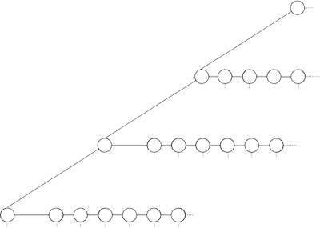

This page shows basic MCTS implementations in Java and C++. The listings are shown with timing, testing and debugging code removed for readability.
Java Code
The following Java code shows a minimal one-page MCTS implementation by Simon Lucas.
This code is strictly tutorial in nature (a simple toin coss is used for each playout) but it clearly demonstrates the operation of the algorithm.
import java.util.LinkedList; public class TreeNode { TreeNode[] children; public void selectAction() { public void expand() { private TreeNode select() { public boolean isLeaf() { public double rollOut(TreeNode tn) { public void updateStats(double value) { public int arity() { |
The complete Java code for this example can be downloaded here.
C++ Code
The following code shows a C++ implementation of MCTS for the game of Gomoku.
Game Class
The generic game class supports simple zero-sum combinatorial games between two players who take turns setting an empty board cell to their colour.
class CGame protected: |
Each game has a starter, a number of discrete moves and a result (win/loss/draw). Each board state has a number of legal moves that are indexed by order, guaranteed to be the same for each repetition of that board state. The default game is played on a 10x10 square board.
Moves are described by either their Nth position in the legal move list (order) or their board position (location).
Specific game types are subclassed from the generic game class. Our default game is 10x10 Gomoku, in which a player wins by making a size 5 line of their colour orthogonally or diagonally.
MCTS Search
Node Class
The node class is the backbone of the MCTS algorithm that defines the tree structure. Each node corresponds to one action (i.e. move) and encodes:
• move order,
• move location,
• number of children,
• number of expected children,
• whether all children have been visited,
• whether the move value is known (i.e. this move results in a terminal condition),
and most importantly:
• estimated move value, and
• number of visits.
Most of this information is packed into UINTs for efficiency.
const int MC_WIN = 1; // win class CNode private: int m_Value; // node value (-1/0/1 if known) |
Rather than having a pointer to every child node (as per typical tree search implementations), we provide a single pointer to the node's first child and a sibling pointer with which the child list can be traversed. This is functionally equivalent to the standard method but has advantages of speed and memory efficiency, as children can be dynamically added only as required. Resulting tree structures will look something like this:

MCTS Class
The MCTS class creates a search tree for the current player (the owner of the search) to determine the best move for a given board position for the current game.
class CMCTS void Shuffle(void); // shuffles move indices CNode* DescendTree(CNode* node); CNode* UCBChoice(CNode* node); private: |
As the search enters each node, all unvisited children must be visited first and it is important to select these in a random order. To achieve this, we define an m_Shuffles array that provides a level of indirection when selecting moves indices, and seed this array with a shuffled number set for all possible cases.
The m_C data member is the exploration constant C used to bias node selection. This is set to a default value of 1 but can be easily adjusted dynamically during the search.
CAI is a helper class that encapsulates the current player's AI settings (maximum search time, maximum search iterations, AMAF, etc).
UCT Search
The search method performs UCT search for the specified player for the specified search time. The algorithm repeats the basic MCTS operation using UCB node selection until the time limit is reached, then returns the move corresponding to the most promising root child.
// Performs UCT search for the current player using the specified AI settings. // Return the best move |
The four basic MCTS steps (selection, expansion, simulation, backpropagation) are evident in the main loop.
1. Selection (Tree Descent)
Starting at the root node, this method descends the search tree choosing and making the best available move at each step on a local board copy until a leaf node is reached. Leaf nodes will either have a known (terminal) value or have an incomplete child list.
// Descends tree choosing the best move at each step. |
2. Expansion
The following method expands the tree, if needed, at the leaf node found by tree descent.
// Expands tree by adding a new child node to the specified leaf node. // Get shuffled move index for next available move slot // Make the new move // Apply game-theoretic logic here... |
If this is the first visit to this leaf node, then the expected number of children are determined and assigned to it. An unvisited choice is selected at random (using a pre-shuffled move index list) and a corresponding child node created for it. The selected move is made and its node becomes the new leaf.
3. Simulation
If the tree descent and expansion steps fail to provide a known result, then a random simulation is run and its MC value (-1/0/1) returned.
// Evaluates node, by simulation if necessary. |
4. Backpropagation
The final value is backpropagated up the sequence of selected moves. Each node along the sequence is visited and the value added to it. The value is negated with each ply as the opponents have opposed goals (assume zero-sum game).
// Propagates the leaf node value back up the current move sequence. value = -value; //
negate opponent's moves |
Nodes with a known result do not have their value updated as this field holds the MC result (-1/0/1).
Node Selection
The algorithm performs two distinct types of node selection:
1) Child node selection during tree descent.
2) Root selection of the best available move after the search has completed.
1. Child Selection (During Search)
The standard UCB calculation is used for selecting among child nodes during tree descent. Note that the estimated reward value for every second (non-owner) search ply is negated, as the opponent will be trying to minimise the owner's reward.
// Returns: for (CNode* ptr = node->GetChild(); ptr != NULL; ptr = ptr->GetNext()) // Determine exploration component (UCB) float uct_value = exploit + m_C * explore; |
The UCB formula balances the exploration and exploitation terms to ensure that relatively unvisited nodes are exercsised to ensure that their (low) values are reliable.
Note that in this implementation nodes are always visited on the iteration in which they are created. This avoids possible division by 0 as ptr->GetVisits() will always be >= 1.
2. Root Selection (After Search)
The following method selects the best move to make from among the root children after the search has completed. If a winning move is found, it is returned immediately.
// Returns: for (CNode* ptr = node->GetChild(); ptr != NULL; ptr = ptr->GetNext()) if (ptr->GetVisits() > 0) if (value > best_value) |
The node selection calculation is different for this step than during tree descent as there is no need to encourage exploration; it is sufficient to select the root child with the highest average reward. This will typically (but not always!) be the most visited root child.
Referee
The referee class controls most aspects of play including the self-play trials. It is also the conduit through which the user applies custom game and AI settings.
class CReferee void MainLoop(void); private: |
The ballot_size is the number of random moves made at the start of each self-play game, referred to as the opening ballot. This encourages a broader search of the move space and stops the AI from following the same preferred line of play every time. The ballot size is set to 2 for all self-play games.
Search Time
The basic implemention achieves 100,000 UCT iterations per second for 10x10 Gomoku on a Macbook Pro i5.
An interesting question is how long the MCTS search should run to achieve a desired level of play. There is currently little known research into this question, but we observe that MCTS does not yield truly intelligent moves until around 100,000 iterations for 10x10 Gomoku using the basic algorithm without enhancement. In this context, we generously define "intelligent" as moves that would trouble a human novice.
For 10x10 Gomoku the following rule of thumb seems plausible:
At least 1,000 iterations per available move
which gives the desired 100,000 iterations for an empty 10x10 board with 100 available moves. However, this is unlikely to be a reliable yardstick for all games; it would be overkill for a trivial game such as Tic Tac Toe and insufficient for a complex game such as Go. A measure of the game's complexity and strategic depth should be incorporated, but these are hard to measure.
Download
The full C++ implementation is available [[here soon]].
Platforms
The code has been tested on Mac OS X and Windows XP and Vista, but should presumably work in any environment that supports the g++ compiler.
Compilation
To compile with gpp, unpack the source files to a directory and run "make" in that directory. An XCode project file is also provided (Run > Console for output).
Usage
Launch the application then at the prompt enter "run" to start a self-play game between two default MCTS agents. Hit return to interrupt the current search. Enter "?" for available options.